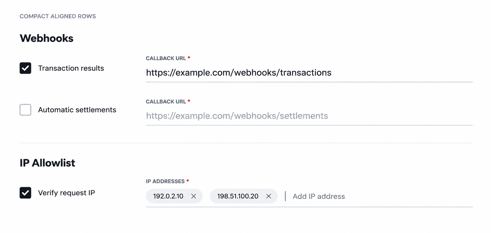
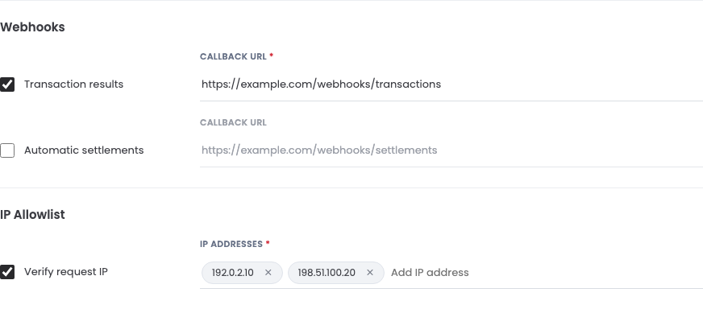

<!doctype html><html lang="zh"><meta charset="utf-8"><title>开发者控件方案核对</title><style>body{margin:24px;background:white;font:14px Arial;color:#29292c}main{display:grid;grid-template-columns:1fr 1fr;gap:24px}h2{font-size:16px}img{display:block;width:100%;height:auto}p{color:#737b88;line-height:1.6}</style><main><section><h2>选定的第一版</h2></section><section><h2>实际 Portal 页面</h2><p>采用 Portal 紧凑字号；停用字段隐藏必填星号。其余业务与校验规则保持一致。</p></section></main></html>